20 NIMEs: Twenty Years of New Interfaces for Musical Expression
Abstract
This paper provides figures and metrics over twenty years of New Interfaces for Musical Expression conferences, which are derived by analyzing the publicly available paper proceedings. Besides presenting statistical information and a bibliometric study, we aim at identifying trends and patterns. The analysis shows the growth and heterogeneity of the NIME demographic, as well the increase in research output. The data presented in this paper allows the community to reflect on several issues such as diversity and sustainability, and it provides insights to address challenges and set future directions.
Author Keywords
meta study, proceedings analysis, bibliometric, demographic
CCS Concepts
•Applied computing~Arts and humanities~Sound and music computing•General and reference~Document types~Surveys and overviews
1. Introduction
The annual international conference on New Interfaces for Musical Expression (NIME) started in 2001 as a two-days workshop at the ACM Conference on Human Factors in Computing Systems (CHI) in 2001 in Seattle, Washington [1]. Starting from 2002, NIME has been held as an independent conference and NIME 2020 marked the 20th edition of the conference. NIME has grown into one of the largest and most vital international conferences within the field of music technology. The initial objective of NIME was to bring together expert technologists interested in musical interaction and musicians interested in novel musical interfaces. They aimed at exploring challenges, opportunities and future directions of the musical branch of Human-Computer Interaction (HCI), which had been enabled by significant technical and technological advances in the previous decades. NIME started as and continues to be a cross-disciplinary conference. Featured works range from the scientific to artistic aspects of new interfaces for musical expression. Contributions cover a variety of aspects related to musical controllers, such as design and technology, frameworks and interfacing protocols, reports on performance and composition, education and entertainment, perceptual and cognitive issues, as well as artistic, cultural and social impact. These have remained at the core of NIME, although over the years the scope has widened to include topics emerging from new technologies and specific issues related to musical interfaces, such as augmented and hyper instruments, mobile music-making, sensors and actuator technologies, mapping strategies, relationship between motion and music, strategies for evaluation, interfaces for people with special needs, robotics applications, interactive sound art installations, generative music, machine learning applications, web-based instruments and performances, sonic interaction design, pedagogical perspectives, theoretical and philosophical issues, and practice-based research methods. The diversity of the topics discussed at NIME also reflects the background of participants, which ranges from engineering and computer sciences to arts and humanities, with often overlapping or blurred boundaries.
The aim of this work is to systematically analyze the publicly available proceeding archive of NIME1 to provide a summary of the last twenty editions, including key facts, figures and trends. Follow up conclusions and reflections are left to the community. The largest share of works presented at NIME is represented by academic papers. However, in several editions the proceedings also included papers accompanying demonstrations, performances and installations, usually one to two pages, which are considered in this study.
Recent publications reviewed the NIME corpus to review sensor technologies [2][3], to analyze technical terminology [4], to examine the communities of practice [5], to investigate the meaning evaluation [6], to survey the longevity of novel instruments [7], to build an anthology of influential works representative of all topics in the corpus [8], to identify the practices and values of performers [9], to determine the gender balance [10], and to set an outward-looking political agenda for the community [11]. The increasing number of meta-studies or systematic reviews of the NIME literature highlights maturity of the community. Similar studies are also found in other music technology related conferences such as the Sound and Music Computing (SMC) conference [12][13], the international conference on Digital Audio Effects (DAFX) [14][15], and the International Symposium on Music Information Retrieval (ISMIR) [16][17][18][19].
2. Method
The NIME proceedings archive is a corpus of almost two thousand papers. Manual analyses are impractical and may result in a limited scope. For each published paper, the archive includes a bibliographic entry in BibTeX format which in turn includes a permalink to the PDF. For this work we developed a software2 that automatically extracts and analyzes data from the NIME archive. The extraction component of the software produces a large data table and a collection of plain text files. The table presents an entry for each paper with several fields including those taken from the BibTeX files as well as other data extracted or computed from the papers, such as the authors’ affiliation, country, geolocation, gender, length, and citations. The text files include the plain body text of the paper excluding front-matter, headers, footers, and list of references. Additionally, we created another numeric table which includes details of each conference manually extracted from the conference homepage3 archive, such as the place, organizer, geolocation, keynote speakers and number of reviewers. The analysis component of the software processes the data within these tables to provide a variety of statistical information, including those presented in this paper, as well as mines the corpus for the most recurrent keywords or selected groups of keywords. The study presented in this paper is exclusively based on the processing of the aforementioned data, which is sourced only from publicly available archives. We intentionally avoided to request and use non-public information from the conference management systems or chairs. This approach allows future scholars to easily repeat or extend the same study by using our software, along with the possibility of adapting the software for another archive.
General information about the NIME conferences are presented in Section 3. Section 4 and 5 detail respectively figures about papers and authors. Section 6 includes statistics related to affiliated institutions and countries. In Section 7 we estimate patterns and impact for traveling to the conferences. Trends on topics are presented in Section 8, and finally in Section 9 we summarize the findings and reflect on the process to gather the presented figures.
3. Conferences
The location and organizing institution of the twenty NIME conferences are listed in the following table and visible in the map in Figure 1, which also illustrates the chronological path starting from NIME 2001.

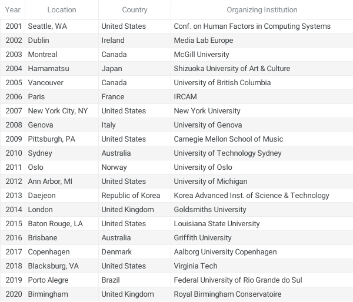
Table 1: Chronological list of NIME conference location and organizing institution.

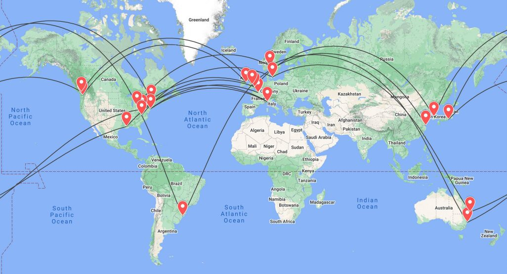
Figure 1: Conferences locations and chronological path. Open interactive version.
There is no location that has hosted the NIME conference more than one time. From Figure 1 it is possible to identify some pattern related to the conference location. Consecutive editions of the conference have always been hosted in different continents, with hops between North America and Europe being the most common. NIME held in Oceania have always been preceded by an edition held in the United States of America and followed by an edition in Scandinavia. In terms of continents, the distribution of NIME hosts, as illustrated in Figure 2, is significantly skewed towards North America and Europe. However these figures should be read against the statistics in Section 6, which details the authors’ affiliated institutions and their geographical distribution. Moreover, if we look only at the last six editions, including the current one, we have at least one NIME conference hosted in each continent excluding Africa. This may suggest that interest in NIME-related topics is extending beyond the Western world and that the outreach of the community is becoming more global. NIME conferences have been hosted in 11 different countries, as illustrated in Figure 3, with United States of America (6), Canada (2), United Kingdom (2) and Australia (2) being the only countries that hosted a NIME conference more than once.

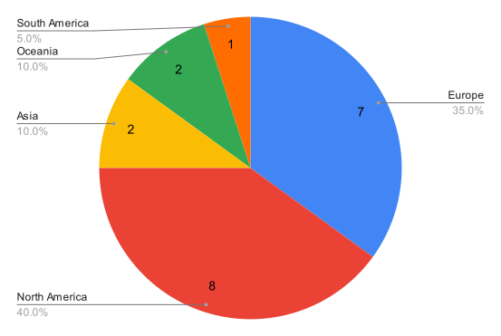
Figure 2: Conferences location by continent. Open interactive version.

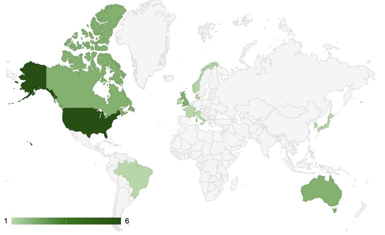
Figure 3: Conference location by country. Open interactive version.
A total of 36 different persons served as the 40 conference chairs. Michael J. Lyons, Sidney Fels, Tina Blaine and Sile O’Modhrain chaired twice. The mode is two chairs per conference, and also the average is very close to two. However in the 2001 edition there had been four chairs, three in 2010, one in 2003, 2012, 2013, and two in the remaining editions. Details are provided in Figure 4. Out of the 40 conference chairs, 31 were males (77.5%) and 9 were females (22.5%). However, as clearly visible in Figure 4, in recent years the gender balance has significantly improved.

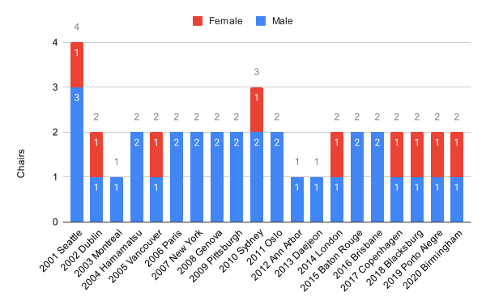
Figure 4: Number and gender of conference chairs. Open interactive version.
There have been a total of 48 unique keynote speech involving 40 males (78.4%) and 11 females (21.6%) for a total of 51 individuals. The discrepancy between speech and speakers is due to NIME 2020 which featured for the first time three duos as guest speakers. Figure 5 shows two trends in the more recent years: a larger number of invited keynote speakers (from 2017) and a nearly perfect gender balance (from 2014). From 2001 to 2013 there had been only one woman speaker, Teresa Marrin Nakra in 2007.

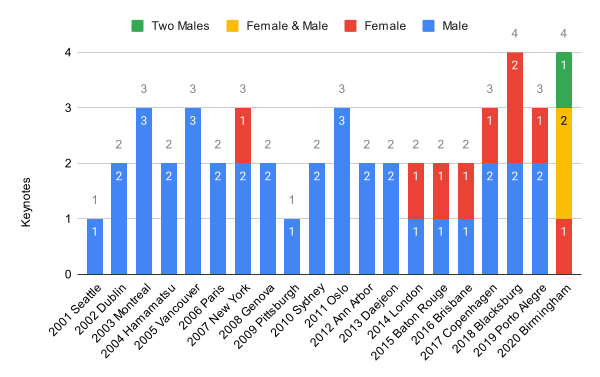
Figure 5: Number and gender of keynote speakers. Open interactive version.
A total of 1024 unique reviewers have been involved in scrutinizing NIME works so far, and these have being appointed for a total of 2755 times. The number of reviewers for each edition are detailed in Figure 6, while in Figure 7 we listed those that served as a reviewer in at least 10 different editions. Michael J. Lyons has been a reviewer in all twenty editions, followed by Sidney Fels and Sergi Jordà that served in 18 editions and Stefania Serafin in 16.

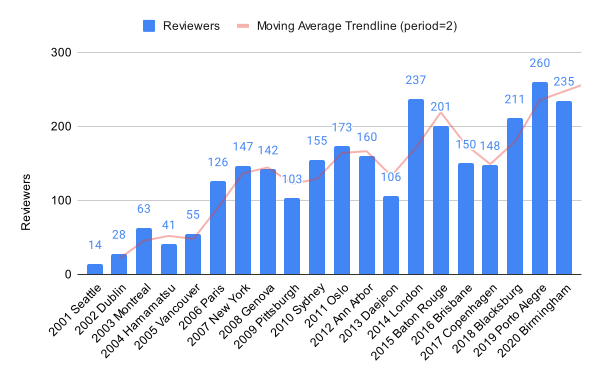
Figure 6: Number of reviewers. Open interactive version.

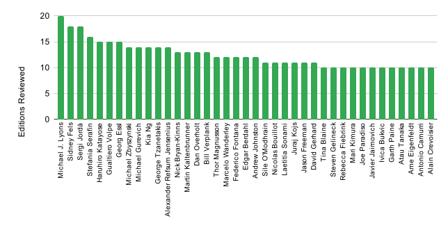
Figure 7: Frequent reviewers. Open interactive version.
4. Papers
A total of 1867 papers have been published in the NIME conference proceedings, including 719 full papers (38.5%), 847 short papers (45.4%), and 301 papers we labelled as other (16.1%), which are mostly related to demonstrations, performances or installations. The breakdown is solely based on the number of pages in the associated PDF as it is not possible to determine to which category papers were submitted and later accepted. In particular, the category full includes papers with 5 pages or more, short with 3 or 4 pages, and other with 2 pages or less. As visible in Figure 8, the number of published papers has constantly increased, with the exception of 2008, from 14 papers in 2001 to 148 papers in 2014. Thereafter the number have slightly declined until the 2020 edition that registered a growing trend. Figure 8 also shows the breakdown into full, short, and other papers. It is evident that from 2016 full papers represent the majority of published works, inverting the trend observed in the previous 15 editions.

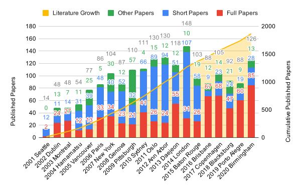
Figure 8: Published papers including breakdown into full, short and other. Open interactive version.
The cumulative size of the NIME corpus is 8147 pages, which include 5,348,293 words in the body text of the papers, excluding front-matter, headers, footers, and list of references. Figure 9 illustrates the total number of pages and words published every year in the NIME corpus, showing a clear correlation with the data in Figure 8. A recent tendency to publish longer papers is evident from the data in Figure 9, for example by comparing the data from 2007 and 2017 in which the number of published papers was nearly identical, or from 2014 and 2020 in which the total words and pages are very close despite a 14.8% drop in published papers. Moreover, regardless the different vertical axis for pages and words, Figure 9 shows a relative increase of words against pages over the years, suggesting a higher verbosity and likely less presence of images, illustration or diagrams. In turn this may also indicate an increasing number of works in less technical disciplines. The data in Figure 10 shows the average number of papers’ pages and words for each year, confirming the trend in publishing longer and contents-richer papers.

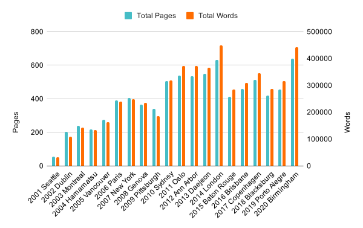
Figure 9: Total number of published pages and words. Open interactive version.

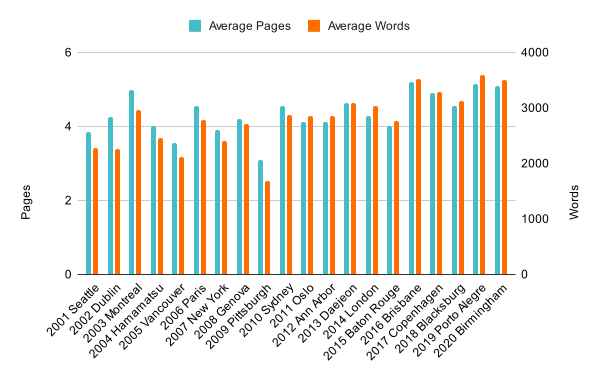
Figure 10: Average number of published pages and words. Open interactive version.
The average length of NIME papers is 4.4 pages or 2865 words. The longest paper in pages is Artistic Creation and Computer Interactive Multisensory Simulation Force Feedback Gesture Transducers published in 2003 with a total of 12 pages, which includes an appendix of 4 pages with extended bibliography and activity timeline of the associated project and laboratory. The longest paper in words is Towards a Telematic Dimension Space published in 2019 with a total of 7377 words. The histograms in Figure 11 and 12 show the distribution of the 1867 NIME papers’ length in pages and words. It is evident how the great majority of papers match the page limit of their respective category. The word count histogram shows a similar trend with three visible local maxima. The average word count for the three categories are the following: 3971 words for full papers, 2579 words for short papers, and 1026 words for other papers. In this study we considered the 114 papers with 5 pages as full papers. However we can not exclude that some of these are short papers with a few references spilling over the 4th page. If we consider only papers with lengths matching the page limits, average word counts are the following: 4109 words for 6 pages, 2630 words for 4 pages, and 1163 words for 2 pages.

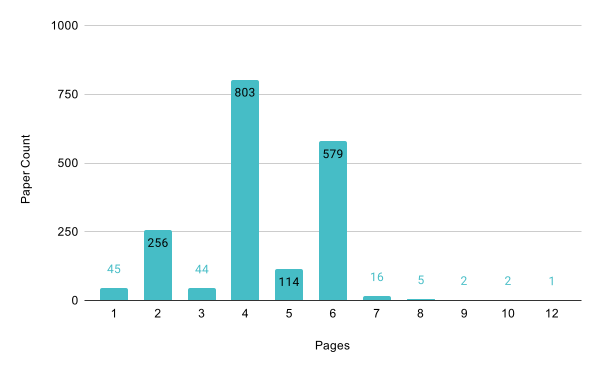
Figure 11: Distribution of papers according to length in pages. Open interactive version.

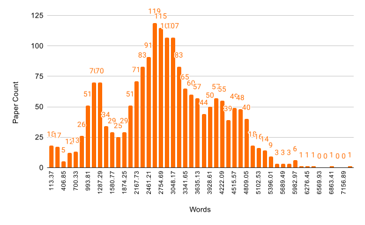
Figure 12: Distribution of papers according to length in words. Open interactive version.
The number of citations associated with each paper, extracted from Semantic Scholar4, changes frequently, and this is particularly true for recent papers as well as for for highly cited papers. The figures presented here are based on data extracted in April 2021. The 1867 NIME papers have been cited so far 20658 times, with an average of approximately 11 citations per paper. The breakdown into the twenty conference editions is detailed in Figure 13, including the total citations attracted by the proceedings of every year as well as the normalized average, calculated dividing the total citations by the number of papers and by the years of age. Papers that have been published for a longer period have more time to attract citations compared to the recent one (for simplicity, we assumed a linear relationship). The normalized average, represented with a red line in Figure 13, attempts to estimate the impact of the individual corpora of papers presented at each NIME edition. It is evident that the first three editions are the most influential, as also visible also in the data in Tables 2 and 3. In particular, works presented in the first edition have been cited 1118 times with only 14 published papers. This count exceeds 1700 if we also include the citations received by journal articles in which some of these papers were later extended. Thereafter, the normalized average appears to be stable with minor fluctuations within the range 0.9 to 1.5. Figures from from recent years may not be significant as associated works haven’t yet received sufficient attention and influenced follow up works.

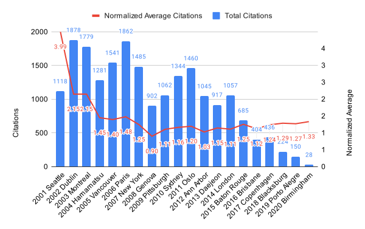
Figure 13: Total and normalized average citations. Open interactive version.
Overall, there are 1513 papers (81.3%) that have been cited at least one time, out of which 593 papers (31.7%) present 10 or more citations. The distribution of citations presents an exponential trend as visible in the histogram of Figure 14, which also includes 349 papers with no citations. Out of these, 104 present one or two pages only and are likely associated with demonstrations, performances and installations. Approximately 50% of the 20,658 citation are associated with only 170 papers (9.1% of the NIME corpus), while approximately 90% of the citations are associated with 789 papers (42.3% of the NIME corpus). The same statistics are also provided for each edition in Figure 14, showing an overall consistency in the fraction of proceedings receiving approximately respectively 50% and 90% of the citations.

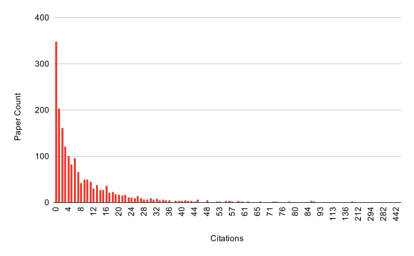
Figure 14: Distribution of published papers against number of citations. Open interactive version.
Table 2 shows the twenty most cited papers, which are mostly from the first six NIME editions, as predictable from the data illustrated in Figure 13. Table 3 includes the twenty papers with the highest number of citations per year of age, which, as expected, includes also more recently published papers. The starred titles indicates papers appearing in the anthology A NIME Reader [8], which includes influential works across the broad range of NIME topics, selected not only according to their number of citations. Finally, Table 4 includes the most cited paper for each edition of the conference.

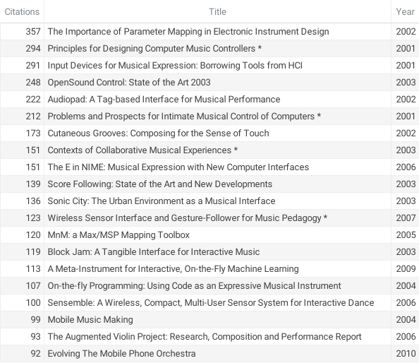
Table 2: Top 20 most cited papers in NIME proceedings.

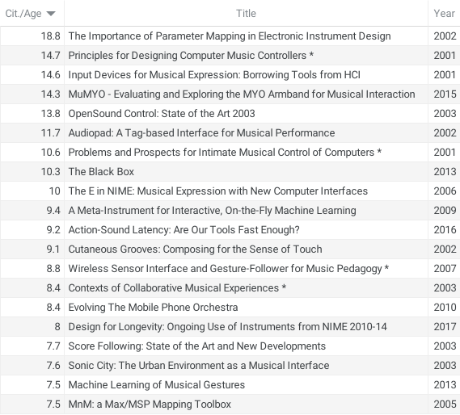
Table 3: Top 20 NIME papers according to citations normalized by years of age.

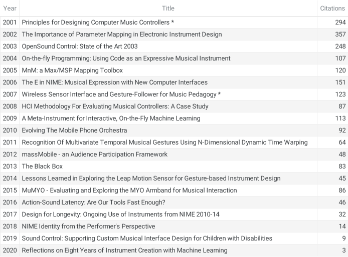
Table 4: Most cited paper for each NIME edition.
5. Authors
In analyzing authorship, we computationally removed middle names, titles and other abbreviations found in the author field of the BibTeX files because these are often registered inconsistently throughout the corpus of papers and lead to false duplicates. For simplicity, when analyzing gender diversity we used the a binary classification method based on author’s first name. While this estimate is not inclusive of the full spectrum of gender identity, it does provide some estimate of diversity within NIME. Moreover for 11 authors we had to manually specify the gender as the specific package used in the software was not able to provide a binary value.
The 1867 papers published in the NIME conference proceedings present a total of 4661 authors representing 2550 unique individuals. As expected, the total number of authors, represented with the blue area and numbers in Figure 16, as well as the unique authors, represented by the stacked columns and numbered in gray, shows a high correlation with the number of published papers in Figure 8. Figure 16 also breaks down unique authors into those authoring a paper at NIME for the first time (red), returning from the previous edition (green), and returning from other earlier editions (yellow). Returning has to be interpreted as an author in the proceedings and not as an attendee to the conference. It is evident that the great majority of authors at each edition have never authored a NIME paper before.

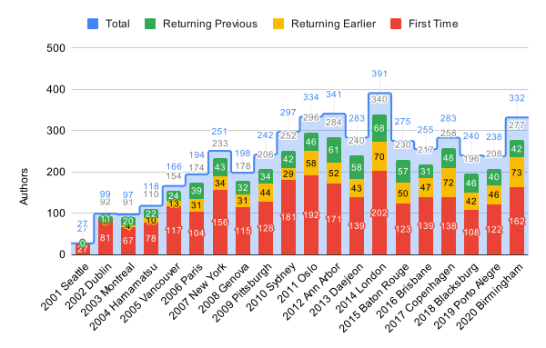
Figure 16: Total authors and unique authors breakdown into first time publishing at NIME, returning from the previous edition, and returning from earlier editions. Open interactive version.
A large majority of NIME papers (81.7%) present one to three authors, as visible from the histogram in Figure 17. The average number of authors per paper is equal to 2.5. However, over the years the average has consistently grown from 1.9 in 2001 up to 2.9 in 2016, and it has stabilized around 2.65 in the last four editions.

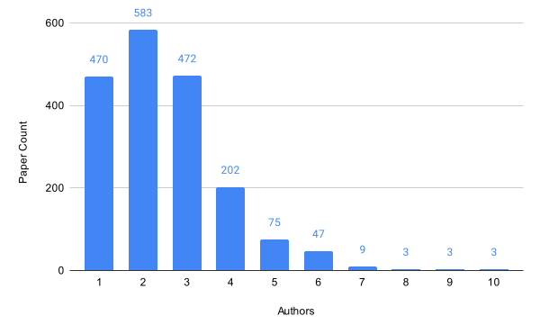
Figure 17: Distribution of authorship. Open interactive version.
Considering the total authors, 15% of them are female and 85% are male. The balance slightly improves if looking at unique authors, with 17.5% females and 82.5% males. Instead, the balance is slightly degraded when considering received citations, with 14.1% accountable to female authors and the remaining 85.9% to male authors. However, 30.8% of the NIME papers present at least one female author. The breakdown per conference edition of these figures are provided in Figure 18, which show minor fluctuations but a substantially unchanged trend over the years. All indicators have improved in the last two editions, with the 2020 NIME being the best so far in terms of gender balance. If this trend continues an ideal gender balance can be reached around 2025.

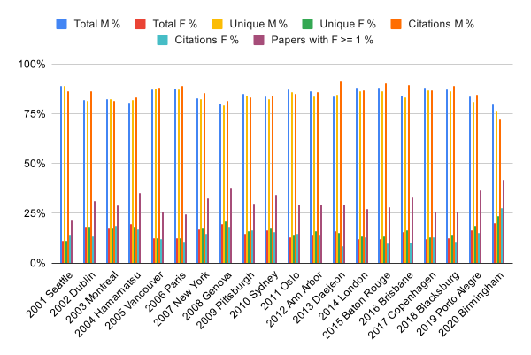
Figure 18: Gender diversity indicators, including percentage of males and females for total authors, unique authors, received citations, and percentage of papers with at least one female author. Open interactive version.
Figure 19 shows four distributions related to authorship, including authors according to published papers, authors according to papers published as first author, authors according to number of NIMEs with at least one paper, and authors according to total number of citations received on their NIME papers. The top twenty authors according to these four criteria are listed in Table 5.
The frequency of publication by authors in the top left histogram of Figure 19 shows that 72.4% of the unique authors contributed to the NIME proceedings with only one publication, while 13.5% of contributed with 2 publications, and 5.2% contributed with 3 publications. Lotka’s law [20] is commonly used to model the productivity pattern of authors in any given field. The law is defined as

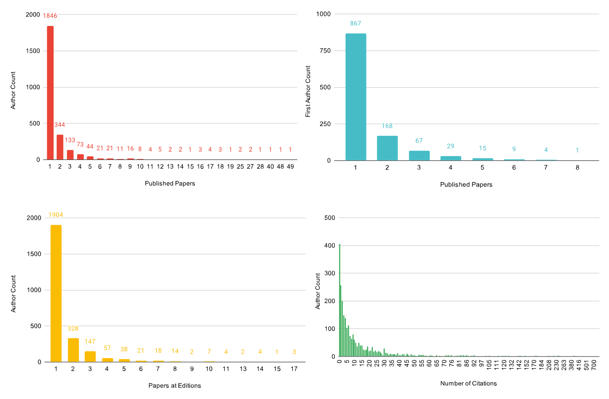
Figure 19: Distribution of authors according to number of papers they published (top left, interactive); Distribution authors according to number of papers they published as first author (top right, interactive); Distribution authors according to number of edition in which they published a at least one paper (bottom left, interactive); Distribution of authors according to total number of citations received on their NIME papers (bottom right, interactive).

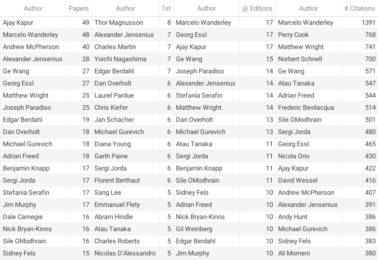
Table 5: Top 20 authors according to number of published papers, number of published papers as first author, number of conference editions with at least one published paper, and number of citations. Open full table.
6. Affiliations
Papers presenting multiple authors are common, and often they have different affiliations. To provide a fair representation, when computing statistics we we tally one paper, as well as the associated citations, to all affiliated institutes, countries and continents for each individual author, even if identical. Moreover, in data related to countries, we do not differentiate between the 50 states in the Unites States of America, and to provide better insights at macro-geographical level we consider the world partitioned into seven continents: Africa, Asia, Europe, North America, South America, Oceania, and Antarctica. Authors’ affiliation is one of the most challenging information to be computationally extract from papers. Despite using a fairly sophisticated method to extract affiliations, combining machine learning [21] and large academic databases, errors are still possible because there is no standardized format for the author field in paper’s front-matter, and a variety of schemes has been observed. Moreover papers associated with performance and installation often includes only the author’s name. Affiliation and country is missing or is impossible to extract respectively for 437 (9.4%) and 514 (11%) non-unique authors. For the remaining, we estimate that up to 5% of non-unique authors may be associated with a partially or totally incorrect institute and country, and this often includes non-academic affiliations. However, when consolidating the statistics we managed to manually fixed the great majority of evident errors and also manually merged figures for influential institutes that were inconsistently named across the NIME corpus.
The 4661 non-unique authors of the 1867 NIME papers are affiliated with 1483 different institutes from 55 countries and 5 continents. The breakdown per conference edition is shown in Figure 20. The number of institutes is correlated with the number of published papers and unique authors shown in Figure 8 and 16. The number of represented countries in the second decade has been fairly stable and higher compared to the first decade, showing an improvement in diversity. All inhabited continents except Africa are always represented by at least one author’s institute in most editions of NIME.

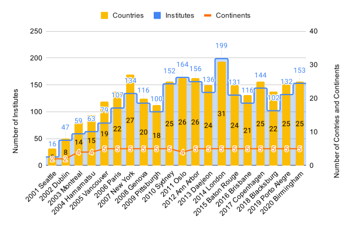
Figure 20: Number of authors’ affiliated institutes, countries, and continent. Open interactive version.
Collaboration in the NIME community is frequent with 53.1% of the papers presenting authors from different institutes, 24.4% from different countries, and 20.9% from different continents. The breakdown per conference edition is detailed in Figure 21, showing a slowly increasing trend in collaboration across institutes. However, the numbers for the specific editions must also be considered against the data illustrated in Figure 22, which shows the percentage of authors affiliated to institutes in the same country and continent as the conference host. Indeed, it is evident how conferences hosted in Europe and North America have attracted a large percentage of authors from the same country or continent.

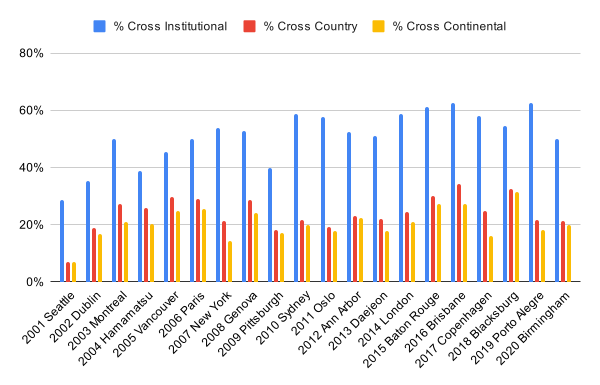
Figure 21: Percentage of papers with authors affiliated with different institutions, countries, and continents. Open interactive version.

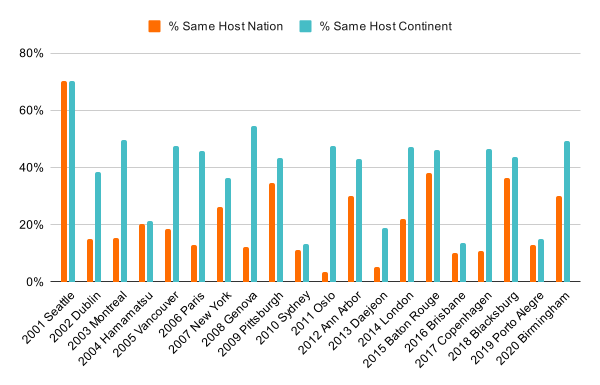
Figure 22: Percentage of authors affiliated with institutions from the same country and continent as the conference host. Open interactive version.
Table 6 shows the the twenty institutions accounting for the largest number of non-unique authors in NIME proceedings and that have been cited the most. The country and continent distribution of non-unique authors and citations are also shown in Figure 23, 24, and 25. These report that the great majority (74.6%) of institutions involved in NIME research are based either in Europe or in North America.

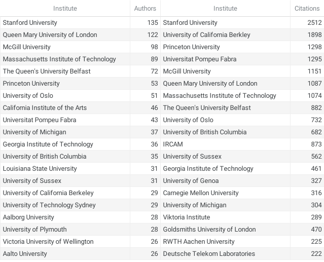
Table 6: Top 20 institutes according to number of affiliated non-unique authors and received citations.

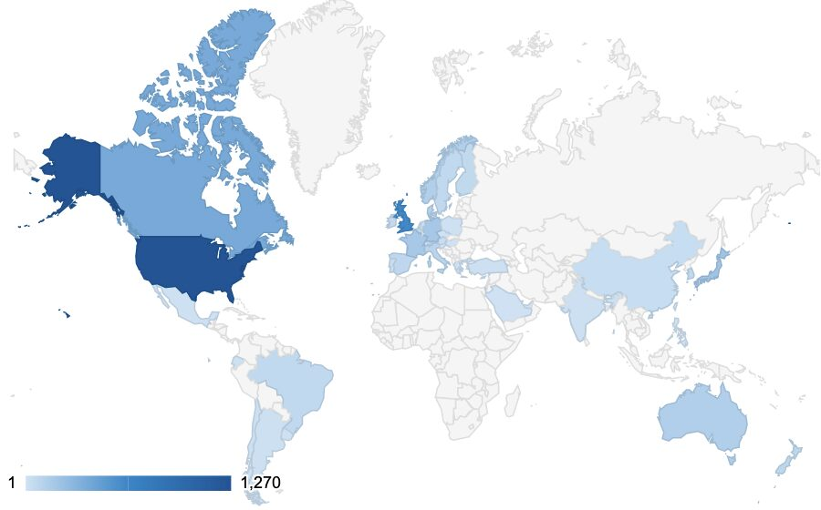
Figure 23: Distribution of non-unique authors by affiliation’s country. Open interactive version.

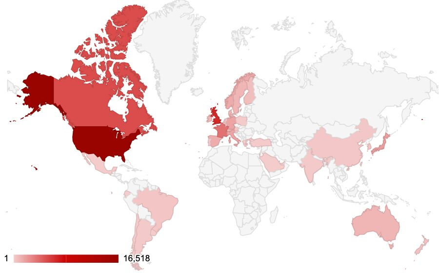
Figure 24: Distribution of citations received by non-unique authors by affiliation’s country. Open interactive version.

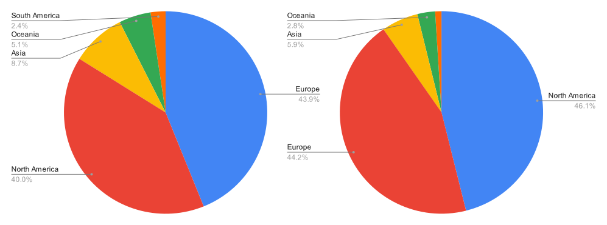
Figure 25: Distribution of non-unique authors (left, interactive) and citations received by non-unique authors by affiliations’ continent (right, interactive).
7. Travel
The environmental impact of NIME and the promotion sustainable research practices is an important matter for the NIME community5. The impact and sustainability of traveling to academic conferences has been often questioned, including in related communities such as the International Computer Music Conference (ICMC) [22]. Therefore, in this study we also estimated the distance that conference participants travelled as well as the associated carbon footprint. Since data on attendees is not publicly available we assumed that all first authors travelled to the conference. As departing location we used the geolocation of author’s affiliation, which as discussed in the previous section is missing for approximately 9.4% of the non-unique authors and it may be incorrect for another 5%. For the carbon footprint calculation we used a model that considers different modes of transport for short, medium and long distances6. The few first authors with two or more papers were counted multiple times, since we assumed that also other colleagues may have travelled along. Other conference attendees such as organizing delegation and volunteers are usually locally based and have a negligible contribution to the total carbon footprint. Keynote speakers are not included as well as the departing location can not be determined. However, a significant fraction of participants are not included in this tally because installations and performances papers are not always included in the proceedings, and when included, the author’s affiliation is not always included in the front-matter.
The estimated total distance travelled by NIME participants in the twenty analyzed years is 10,431,836 km. The associated carbon footprint is 5841 tCO2e (tonnes of carbon dioxide equivalent). The average distance travelled by each participant is 5900 km and the average carbon footprint is 3.3 tCO2e. There is no significant difference genders, with females presenting an average of 6097 km and 3.44 tCO2e, and males an average of 5864 km and 3.28 tCO2e. However the total distance and carbon footprint of the various editions is significantly different, as visible in Figure 26. The data must be read against the conference location and then number of published papers in Figure 8, which matches the estimated participants and was relatively low in the first few editions. As expected, since most authors are affiliated with Europeans and North Americans institutions, the conferences hosted in other continents requires longer travels and result in a higher environmental impact. This trend is also visible in Figure 27, which reports the same figures averaged per participant, as well as in Figure 28, where we aggregated the average data by conference hosting continent.

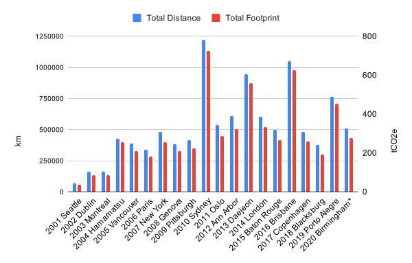
Figure 26: Estimated total distance travelled by conference participants and associated carbon footprint. Open interactive version.

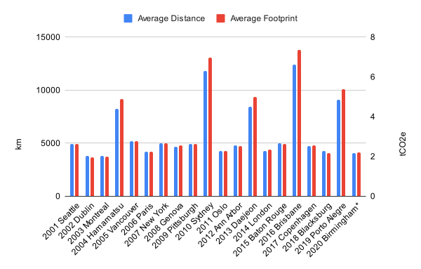
Figure 27: Estimated average distance travelled by each conference participant and associated carbon footprint. Open interactive version.

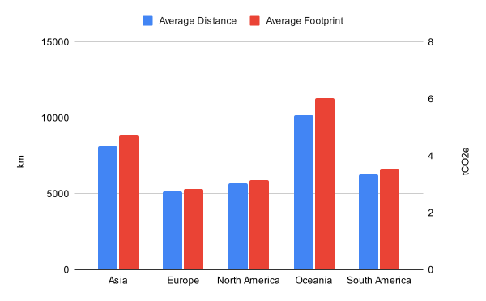
Figure 28: Estimated average distance travelled by each conference participants and associated carbon footprint aggregated by hosting continent. Open interactive version.
Figure 29 shows the average distance travelled and carbon footprint aggregated by affiliation country, which we assumed as the travel departure point. As discussed earlier, errors in extracting author’s affiliation are possible. Therefore in the aggregated average figures errors are negligible for countries presenting a large number of conference participants, as visible in Figure 30, but they may significantly bias those with only a handful of participants. Moreover, data for countries with little participants is poorly representative even if accurate, because based on one or few conferences only. As expected, when analyzing the yearly breakdown of participants according to country we observed some proximity correlation with the hosting location. However, we can not assert that this is due to environmental concerns, other factors may have contributed as well.

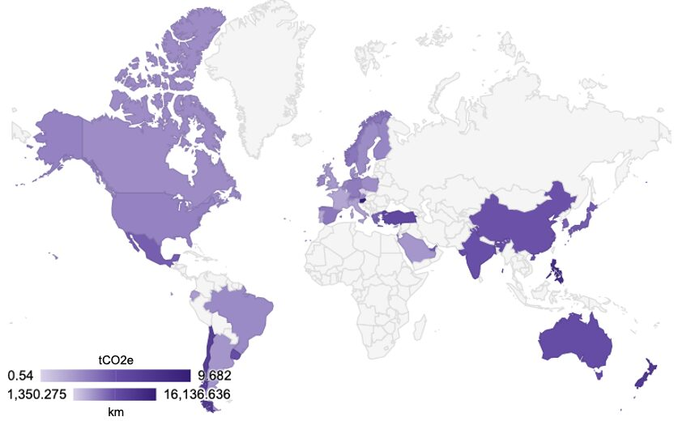

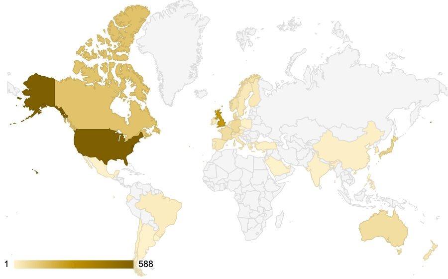
Figure 30: Estimated total number of conference participants by affiliation’s country . Open interactive version.
In Figure 26 and 27, the latest NIME edition, 2020 Birmingham, is starred because travel did not take place. Indeed, due to the COVID-19 pandemic the conference was held only as a virtual online event. However we included the expected travel estimates because participants were ready, both environmentally and financially, to undertake the required travel when submitting their work.
8. Topics
Over twenty years of NIME conferences, a wealth of topics have been covered. However, a central group of themes prevail as the most common throughout each year of papers. Figure 31 illustrates the frequency of the ten most common terms from the proceedings of each edition, filtered by uniqueness after a series of pre-processing was applied to the body text of all papers, and truncated to a total of twenty terms in the graph. This included the removal of non-alpha characters, conversion to lowercase, exclusion of words less than 4 characters, lemmatization of words (i.e. grouping together inflection forms of a word), merging of selected similar words and finally the removal of stop-words, or common, semantically irrelevant terms. We additionally chose to merge and add words to our stop-word collection after inspecting preliminary results. Some examples of words we chose to merge were [music, musical, musically], [control, controller], [sound, audio], and [performance, performer]. This decision is made in order to group common words together if they shared a close topic. However, we are aware that in specific contexts these terms may carry different meanings. Examples of nondescript words we chose to delete after inspection are [like, effect, figure, piece, state, example] while others like [project, information, research, environment, paper, sample, mean, element] do not provide any meaningful insight into an academic paper’s content. Each corpus of words is grouped by year of publication, pre-processed, filtered by uniqueness, and finally we plotted their occurrence frequency over time.

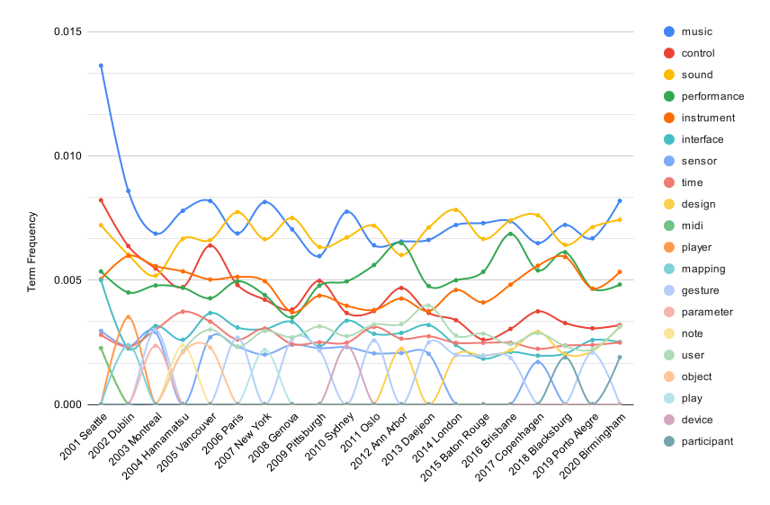
Figure 31: Trend of 10 most common, unique terms in the body text of published papers. Open interactive version.
While many of the top ten terms continue to persist as the most often used words in respect to each year’s corpus, there does appear to be a downward trend in response to a more equal distribution, with other terms on the rise. This may suggest that later years of NIME’s papers have broadened in their topic range. However, processing the titles instead of a yearly corpus of words, provides a different picture as shown in Figure 32. Whereas the collective top ten terms per edition only had twenty unique terms once filtered by uniqueness, taking the top ten from titles per edition results in 36 unique words, which we have truncated to twenty within the graph. With far less words to work with compared to the entire NIME corpus (11,097 versus 2,414,288 after filtering), it is understandable that the vocabulary chosen for a title tends towards eclectic. Music, again, stands as an outlier in frequency here as well as leading in term count.

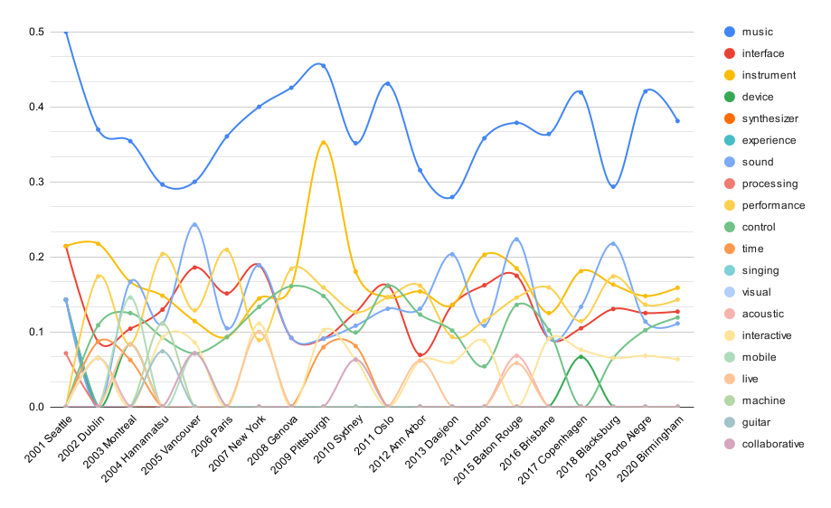
Figure 32: Trend of 10 most common, unique terms in the title of published papers. Open interactive version.
Additionally, viewing potential novel trends by looking for unique terms within each year’s most common 100 terms provides some insight into how broad NIME’s range of topics. To get a sense of how years varied from one to the next, the top ten terms in the body text of all papers in a given edition were filtered and removed if they matched the those prom the previous ones. The results can be seen in Table 7, where a collection of each year’s ten most common were filtered by their unique words relative to past editions. From 2015 onwards less than 10 terms are are displayed as only fewer of 100 of the most common words of those years did not appear in all prior top ten.

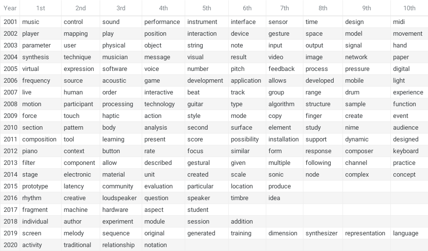
Table 7: Top 10 new most common, unique terms in the body text of all papers.
Finally, in Figure 33 and 34 we provide two word clouds generated using respectively the body text and title of all NIME published papers.

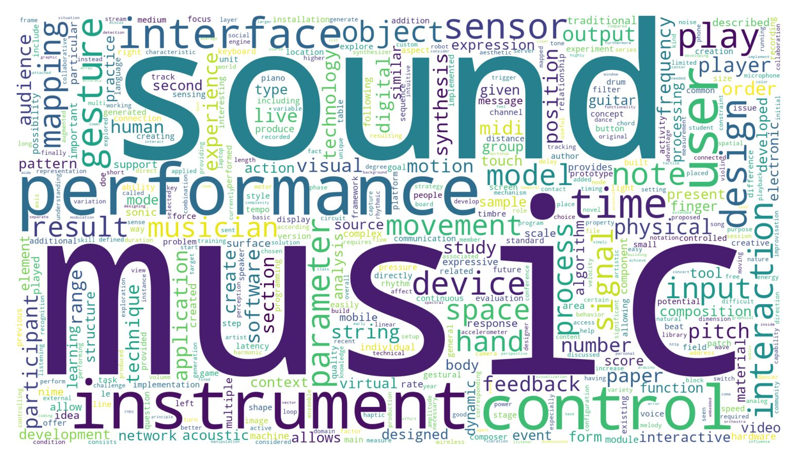
Figure 33: Word cloud generated using the body text of all NIME published papers.

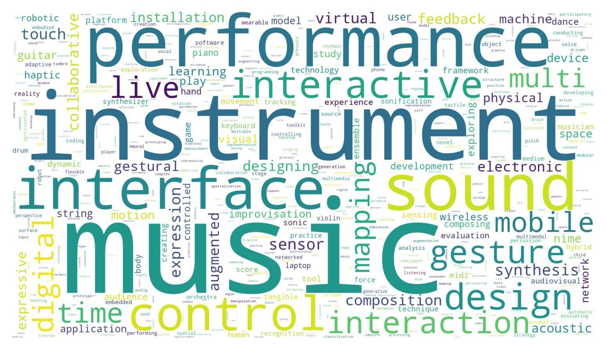
Figure 34: Word cloud generated using the title of all NIME published papers.
9. Conclusion
The facts and figures reported in this paper have shown how the research output of the NIME community has grown and consolidated over twenty years of existence. The demographic diversity is also slowly improving, involving an increasing number of authors, institutes, and countries, as well as pointing towards a better gender balance and a broader cross-disciplinarily. Further and more accurate studies will be possible when more data is openly and coherently published, such as the archive of performances and installations, which can provide a comprehensive picture on the travel carbon footprint and perhaps reveal a different pattern within this category of participants.
Information on acceptance rate is also not publicly available, and our attempt to estimate it starting from the number of reviewers led to inconsistent results. We believe that such information, as well a list of conference participants can provide further and deeper insights. A conference report in a standardized format will definitely simplify the development of the computational analysis process. The same applies for the author field in paper’s front-matter, which is an important source of information that requires standardization.
As the NIME community continues to move forward, at NIME 2021 Shanghai authors will have for the first time the opportunity chose online attendance to present their work. Although this is a necessity due to the COVID-19 pandemic, we believe that such option can open for new participation and authorship patterns, if preserved over time. Perhaps it may contribute to attract valuable authors that for financial, environmental, cultural, or health-related are unable to travel. This will challenge the community to explore different concepts for hosting hybrid conferences, to optimize the single or multiple locations for minimizing the travel impact, and to develop online virtual spaces in which demonstrations, performances and installations coexist seamlessly with physical spaces. Finally, from the 2021 edition onwards, papers will be archived in PubPub7, which will require further development of the computational approach we used to extract data and analyze the NIME corpus. Yet, at the same time this will provide new opportunities to gather further insights by analyzing integrated multimedia files and ease the extraction process as all textual data is well structured within a web page.
Footnotes
References
- ↩Poupyrev, I., Lyons, M. J., Fels, S., & Blaine, T. (2001). New Interfaces for Musical Expression. Proceedings of CHI 2001, Extended Abstracts, 491–492. New York, US: ACM. https://doi.org/10.1145/634067.634348
- ↩Marshall, M. T., Hartshorn, M., Wanderley, M. M., & Levitin, D. J. (2009). Sensor Choice for Parameter Modulations in Digital Musical Instruments: Empirical Evidence from Pitch Modulation. Journal of New Music Research, 38(3), 241–253. https://doi.org/10.1080/09298210903085865
- ↩Medeiros, C. B., & Wanderley, M. M. (2014). A Comprehensive Review of Sensors and Instrumentation Methods in Devices for Musical Expression. Sensors, 14(8), 13556–13591. https://doi.org/10.3390/s140813556
- ↩Jensenius, A. R. (2014). To gesture or Not? An Analysis of Terminology in NIME Proceedings 2001–2013. Proceedings of the International Conference on New Interfaces for Musical Expression, 217–220. London, United Kingdom: Goldsmiths, University of London. https://doi.org/10.5281/zenodo.1178816
- ↩Marquez-Borbon, A., & Stapleton, P. (2015). Fourteen Years of NIME: The Value and Meaning of `Community’ in Interactive Music Research. In E. Berdahl & J. Allison (Eds.), Proceedings of the International Conference on New Interfaces for Musical Expression (pp. 307–312). Baton Rouge, Louisiana, USA: Louisiana State University. https://doi.org/10.5281/zenodo.1179128
- ↩Barbosa, J., Malloch, J., Wanderley, M., & Huot, S. (2015). What does “Evaluation” mean for the NIME community? In E. Berdahl & J. Allison (Eds.), Proceedings of the International Conference on New Interfaces for Musical Expression (pp. 156–161). Baton Rouge, Louisiana, USA: Louisiana State University. https://doi.org/10.5281/zenodo.1179010
- ↩Morreale, F., & McPherson, A. (2017). Design for Longevity: Ongoing Use of Instruments from NIME 2010-14. Proceedings of the International Conference on New Interfaces for Musical Expression, 192–197. Copenhagen, Denmark: Aalborg University Copenhagen. https://doi.org/10.5281/zenodo.1176218
- ↩Jensenius, A. R., & Lyons, M. J. (Eds.). (2017). A NIME Reader: Fifteen Years of New Interfaces for Musical Expression (1st ed. 2017 edition). New York, NY: Springer.
- ↩Morreale, F., McPherson, A. P., & Wanderley, M. (2018). NIME Identity from the Performer’s Perspective. In T. M. Luke Dahl Douglas Bowman (Ed.), Proceedings of the International Conference on New Interfaces for Musical Expression (pp. 168–173). Blacksburg, Virginia, USA: Virginia Tech. https://doi.org/10.5281/zenodo.1302533
- ↩Xambó, A. (2018). Who Are the Women Authors in NIME?–Improving Gender Balance in NIME Research. In T. M. Luke Dahl Douglas Bowman (Ed.), Proceedings of the International Conference on New Interfaces for Musical Expression (pp. 174–177). Blacksburg, Virginia, USA: Virginia Tech. https://doi.org/10.5281/zenodo.1302535
- ↩Morreale, F., Bin, S. M. A., McPherson, A., Stapleton, P., & Wanderley, M. (2020). A NIME Of The Times: Developing an Outward-Looking Political Agenda For This Community. In R. Michon & F. Schroeder (Eds.), Proceedings of the International Conference on New Interfaces for Musical Expression (pp. 160–165). Birmingham, UK: Birmingham City University. https://doi.org/2292/51480
- ↩Pratyshu, Umbert, M., & Serra, X. (2010). A look into the past: Analysis of trends and topics in the Sound & Music Computing Conference. Sound & Music Computing Conference. Barcelona, Spain. https://doi.org/10.5281/zenodo.849701
- ↩Mauro, D. A., Avanzini, F., Barate, A., Ludovico, L. A., Ntalampiras, S., Smilen, D., & Stefania, S. (2020). Sixteen Years of Sound and Music Computing: A Look Into the History and Trends of the Conference and Community. Sound & Music Computing Conference, 3–10. Torino, Italy. https://doi.org/10.5281/zenodo.3898600
- ↩Hamadicharef, B. (2010). Bibliometric Study of the DAFx Proceedings 1998-2009. Digital Audio Effects (DAFx2010), 427–430. Graz, Austria. Retrieved from https://hal.archives-ouvertes.fr/hal-00530505
- ↩Wilson, A. (2017). Co-authorship and community structure in the DAFx conference proceedings: 1998–2016. Digital Audio Effects (DAFx-17), 502–509. Edinburgh, UK. Retrieved from http://usir.salford.ac.uk/id/eprint/48829
- ↩Grachten, M., Schedl, M., Pohle, T., & Widmer, G. (2009). The ISMIR Cloud: A Decade of ISMIR Conferences at Your Fingertips. Proceedings of the 10th International Society for Music Information Retrieval Conference (ISMIR), 63–68. Kobe, Japan. https://doi.org/10.5281/zenodo.1416434
- ↩Lee, J. H., Jones, M. C., & Downie, J. S. (2009). An Analysis of ISMIR Proceedings: Patterns of Authorship, Topic, and Citation. Proceedings of the 10th International Society for Music Information Retrieval Conference (ISMIR), 57–62. Kobe, Japan. https://doi.org/10.5281/zenodo.1416618
- ↩Sordo, M., Ogihara, M., & Wuchty, S. (2015). Analysis of the evolution of research groups and topics in the ISMIR conference. Proceedings of the 16th International Society for Music Information Retrieval Conference (ISMIR), 204–210. Málaga, Spain. https://doi.org/10.5281/zenodo.1416354
- ↩Hu, X., Choi, K., Lee, J. H., Laplante, A., Hao, Y., Cunningham, S. J., & Downie, J. S. (2016). WiMIR: An informetric study on women authors in ISMIR. Proceedings of the 17th International Society for Music Information Retrieval Conference (ISMIR), 765–771. New York City, United States. https://doi.org/10.5281/zenodo.1414832
- ↩Lotka, A. J. (1926). The frequency distribution of scientific productivity. Journal of the Washington Academy of Sciences, 16(12), 317–323.
- ↩Tkaczyk, D., Collins, A., Sheridan, P., & Beel, J. (2018). Machine Learning vs. Rules and Out-of-the-Box vs. Retrained: An Evaluation of Open-Source Bibliographic Reference and Citation Parsers. Proceedings of the 18th ACM/IEEE on Joint Conference on Digital Libraries, 99–108. Fort Worth Texas USA: ACM. https://doi.org/10.1145/3197026.3197048
- ↩Parncutt, R., Barrett, N., Väkevä, K., & Garrett, R. (2019). Letters - Grounding the ICMC. Computer Music Journal, 43(4), 7–11. Retrieved from https://muse.jhu.edu/article/773079